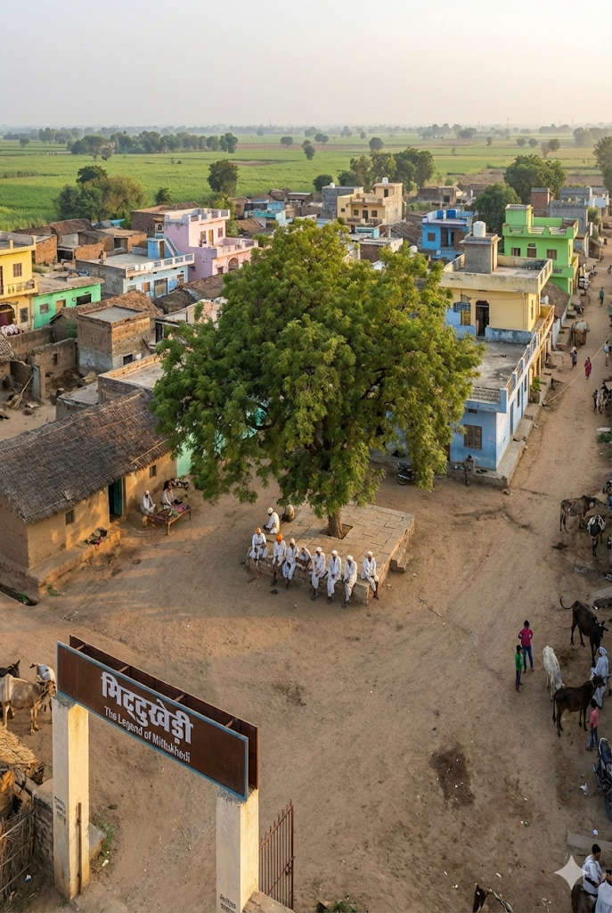

History & Identityइतिहास और
पहचान
The Legend of Mittukhedi
मिट्टूखेड़ी की गाथा
The name "Mittukhedi" is deeply rooted in the ethos of the Malwa region. Elders
believe it signifies a settlement ("Khedi") bonded by the soil ("Mitti").
Established over a century ago by hardworking Dangi farming
families, the village
has transformed from a
small hamlet into a thriving rural community.
It sits proudly in the Rajgarh district, a region known for its historical significance and brave
rulers.
The village ethos is built on the principle of "Vasudhaiva Kutumbakam" (The World is One
Family), where every resident is kin.
"मिट्टूखेड़ी" नाम मालवा क्षेत्र के लोकाचार में गहरा रचा-बसा है। बुजुर्गों का मानना
है कि यह मिट्टी ("मिट्टी") से जुड़ी एक बस्ती ("खेड़ी") का प्रतीक है।
एक सदी से भी पहले मेहनती दांगी किसान परिवारों द्वारा स्थापित,
यह गाँव एक छोटी सी
बस्ती से एक समृद्ध
ग्रामीण समुदाय में बदल गया है।
यह राजगढ़ जिले में गर्व से स्थित है, जो अपने ऐतिहासिक महत्व और बहादुर शासकों के लिए जाना जाता है।
गाँव का लोकाचार "वसुधैव कुटुम्बकम" (विश्व एक परिवार है) के सिद्धांत पर बना है, जहाँ हर
निवासी एक परिजन है।
Geographical Layout
भौगोलिक विन्यास
Mittukhedi is planned with practical wisdom. The main road acts as the spine, with smaller "Galis"
(streets) branching out like veins.
The center of the village, the Chowk, is defined by an ancient Neem tree and a
raised platform where important discussions happen.
Houses are clustered to ensure security and social bonding. The 'Kutcha' houses keep the interiors
cool during the scorching Madhya Pradesh summers, while newer double-story 'Pucca' houses feature
vibrant colors, showcasing the prosperity brought by modern agriculture.
मिट्टूखेड़ी को व्यावहारिक ज्ञान के साथ नियोजित किया गया है। मुख्य सड़क रीढ़ की हड्डी के रूप में
कार्य करती है, जिसमें छोटी "गलियाँ" नसों की तरह निकलती हैं।
गाँव का केंद्र, चौक, एक प्राचीन नीम के पेड़ और एक ऊंचे चबूतरे से परिभाषित होता है
जहाँ महत्वपूर्ण चर्चाएँ होती हैं।
सुरक्षा और सामाजिक जुड़ाव सुनिश्चित करने के लिए घर समूहों में बने हैं। 'कच्चे' घर भीषण गर्मी के
दौरान अंदरूनी हिस्से को ठंडा रखते हैं, जबकि नए दो मंजिला 'पक्के' घरों में जीवंत रंग होते हैं, जो
आधुनिक कृषि द्वारा लाई गई समृद्धि को प्रदर्शित करते हैं।

The spiritual heart of our village.
हमारे गाँव का आध्यात्मिक केंद्र।